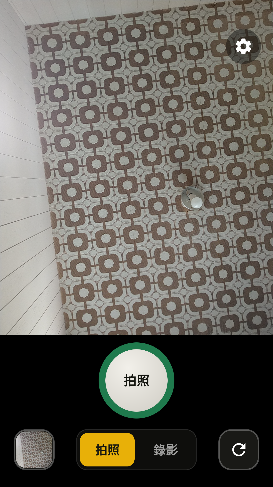
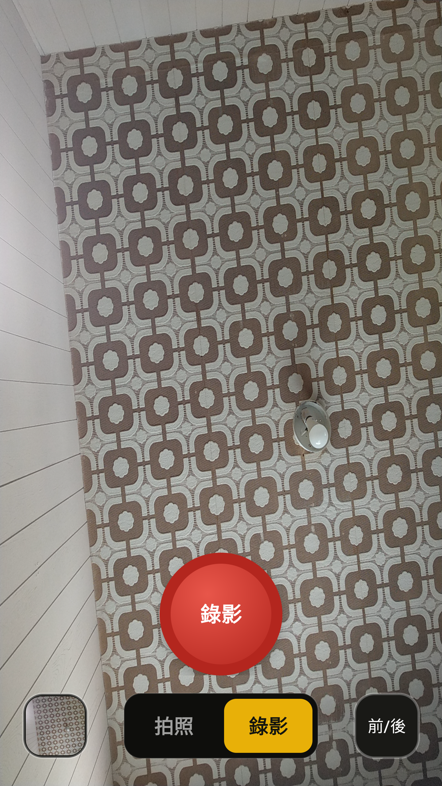
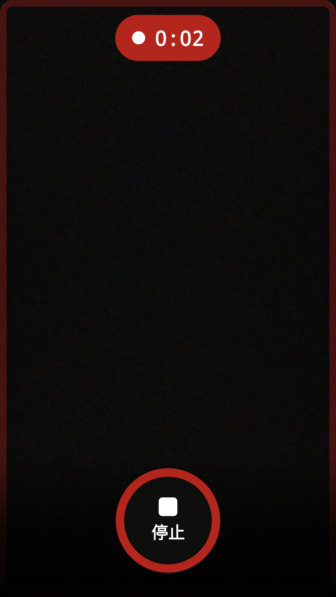

起因很日常:家裡長輩覺得三星原生相機「按鈕太多、不知道要按哪個」。他們要的其實只有一件事——對準、按一下、拍到。市面上的相機 App 就算標榜簡單,設定、濾鏡、比例、HDR 一字排開,對不熟手機的人還是負擔。於是我決定自己做一支,刪到只剩必要。
與其從零寫相機(處理 Camera2、對焦、儲存、權限……是個大坑),我選擇站在巨人的肩膀上:fork 一個成熟的開源相機,只重寫「使用者看到的那一層」。這篇文章記錄整個過程,以及一路上真正讓我停下來除錯的地方。
01從一支 HTC U11 開始
手邊的測試機是一支舊 HTC U11。第一步是打開 USB 偵錯,讓電腦能透過 adb 控制它:設定 → 關於手機 → 連點「版本號碼」七次解鎖開發人員選項,再打開 USB 偵錯。接上線、在手機上按「一律允許」之後:
$ adb devices -l
FA78T1801518 device model:HTC_U_3u device:htc_ocndugl裝置就緒。順帶一提,過程中想查電池循環次數才發現:未 root 的手機,不管是 dumpsys battery、底層 sysfs 節點還是 *#*#4636#*#* 選單,都拿不到 cycle count——那是原廠鎖住的資訊。這是題外話,但也是這趟旅程的第一課:先確認「能不能拿到」,再決定怎麼做。
02為什麼選 Open Camera
Open Camera 是一支成熟的 Android 開源相機,作者 Mark Harman,採 GPL v3 授權,純 Java 撰寫。GPL 代表我可以合法 fork、修改、甚至散布,只要:散布時一併釋出原始碼、保留授權與版權聲明、標註修改。對「做一支自用/給家人的 App」來說再適合不過。
03用可攜工具鏈把它 build 起來
這台開發機沒裝 Android Studio,只有一套可攜式工具鏈(JDK 17、Gradle、Android SDK)。clone 下來後才發現它要 compileSdk 36 + build-tools 36 + Gradle 8.13,SDK 只有 34,於是先用 sdkmanager 補齊,再:
JAVA_HOME=<jdk17> ANDROID_HOME=<sdk> ./gradlew assembleDebug
# → BUILD SUCCESSFUL, app-debug.apk (~5.7MB)第一次裝到測試機卻踩到 INSTALL_FAILED_UPDATE_INCOMPATIBLE——因為手機上已有正版 Open Camera,簽章不同無法覆蓋。解法是給 debug 版加一個 applicationIdSuffix ".dev",讓它以 net.sourceforge.opencamera.dev 和正版並存:
buildTypes {
debug { applicationIdSuffix ".dev"; versionNameSuffix "-dev" }
}04核心決策:疊加層 + 複用相機管線
這是整個專案最關鍵的架構選擇。我沒有重寫相機,而是:在 Open Camera 既有的畫面最上層,疊一層全新的極簡 UI;新按鈕直接呼叫 OC 既有的方法(takePicture、clickedSwitchCamera、clickedSwitchVideo),相機管線、權限、儲存全部沿用。原生的控制項則一律隱藏。
不重寫相機,只重寫「使用者看到的那一層」。
成果是兩個乾淨的畫面。用純 CSS 還原一下(下面是網頁模擬,非截圖):
左:拍照頁(4:3 貼齊上方,控制列在下方黑底)。右:錄影頁(16:9 滿版,紅框脈動提示,控制項浮動)。


05魔鬼藏在細節裡
疊加層的想法很美,但 Open Camera 有它自己的一套 UI 生命週期,和我的疊加層不斷「打架」。以下是真正讓我停下來除錯的幾個坑。
坑一:原生按鈕怎麼藏都藏不掉
我在啟動時把原生按鈕設成 GONE,但曝光鈕和快門鈕還是會冒出來。原因是 OC 的按鈕預設就是 VISIBLE,而且相機開啟時的 cameraSetup() 會依偏好把它們再顯示一次。光在 showGUI() 攔截不夠,得連 cameraSetup 一起守衛:
if (SIMPLE_UI) {
takePhotoButton.setVisibility(View.GONE); // 用我們自己的快門
}
// exposure、settings、popup、switch_* 也在 MainUI 的兩個節點強制 GONE坑二:錄影一停止就閃退
最陰險的一個。停止錄影必定 crash:
java.lang.IllegalArgumentException: width and height must be > 0
at Bitmap.createScaledBitmap(...)
at MyApplicationInterface.stoppedVideo(...)追下去發現:OC 停止錄影時,會拿「圖庫按鈕的寬度」去縮放影片縮圖。但我把圖庫按鈕藏起來了,它的寬度是 0 → 縮成 0×0 → 崩潰。修法是在精簡模式下跳過 OC 的縮圖產生(反正我用自己的 MediaStore 縮圖)。
坑三:所見 ≠ 所得
為了消掉 4:3 照片在長螢幕上的黑邊,我一度把預覽設成「填滿螢幕」模式。畫面很漂亮,但拍出來的照片卻包含預覽沒顯示的左右兩側——使用者照著預覽構圖,拍到的卻不是那個框。對主打「簡單」的相機,這是致命的。最後回到 WYSIWYG:預覽比例 = 照片比例,誠實優先,黑邊當作控制列的位置(這正是 iPhone 的做法)。
對一支簡單相機來說,「所見即所得」比「消除黑邊」重要太多。
坑四:切換模式後立刻按快門,被靜默吞掉
使用者回報:點「錄影」→ 點「拍照」→ 一秒內按快門,4 次全部沒反應、不產生檔案也沒提示。原因是切換模式會讓相機重開約一秒,期間相機控制器是 null,takePicture() 被 OC 靜默丟棄。修法是:按快門時若相機還沒就緒,延後重試直到就緒才拍,而不是吞掉。
private void tryCapture(int attempt) {
if (cameraReady()) { doCapture(); }
else if (attempt < 30) { // 最多等 ~3 秒
handler.postDelayed(() -> tryCapture(attempt + 1), 100);
}
}修完之後,同樣的重現路徑 4/4 全部成功。
坑五:UI 會跟著手機轉
長輩橫拿手機時,整個 UI 跟著旋轉、還跑出奇怪的按鈕。OC 預設在非橫向鎖定時用 SCREEN_ORIENTATION_SENSOR。精簡版直接鎖成直向,UI 不再亂轉:
else if (SIMPLE_UI)
setRequestedOrientation(ActivityInfo.SCREEN_ORIENTATION_PORTRAIT);06排版打磨
功能對了之後,是一輪輪的視覺打磨,大多來自實機看到的問題:
iPhone 式版面。快門獨立置中在上方,相簿、拍照/錄影、切換鏡頭排成同一列在下方。拍照/錄影分頁設計。拍照是 4:3 貼齊頂部、控制列在下方黑底;錄影是 16:9 滿版、控制項透明浮動。錄影提示。觀景窗紅框以約 1.8 秒一次的節奏緩慢脈動,搭配頂部計時膠囊,錄影中畫面上只留一顆「停止」。相簿縮圖。相簿鍵顯示上一張的縮圖。切換鏡頭改用循環箭頭圖示。右上角設定鈕可設定/新建儲存資料夾。

還有一個長螢幕(如 Galaxy S25,約 19.5:9)才明顯的問題:4:3 的黑邊全擠在底部一大塊很怪。解法是執行時計算,把預覽往下推,讓黑塊分成上方一小條(放設定鈕)+ 下方控制列,同時保證預覽仍是全寬 4:3、不被壓縮:
int topMargin = Math.max(0, Math.min(sh - ph, sh - ph - ch));
// sh=螢幕高, ph=預覽高, ch=控制列高 → 黑塊平均分配、預覽不縮水07版本控管、測試與發佈
用 scrcpy 遠端操作。整個過程幾乎都靠 scrcpy 把手機鏡射到電腦上、用滑鼠即時操作與截圖,不必一直低頭看手機。
自己的版本號方案。一開始 release 沿用了 OC 的 versionCode 96,導致每次發佈在「靠 versionCode 判斷更新」的機制裡看起來都是同一版。改成自己的方案 major×10000 + minor×100 + patch(v1.4 = 10400),每次發佈遞增。
正式簽章 + GitHub Releases。建了 release 金鑰(密碼與金鑰檔都不進版控),簽章後把 APK 發到 GitHub Releases,家人用手機瀏覽器就能下載安裝。
版本足跡
- v1.0 — 第一支能跑的正式版四鍵極簡 UI、錄影紅框提示、正式簽章。(含一個 WYSIWYG bug)
- v1.1 — 修正所見即所得預覽框回到與實際照片一致。
- v1.2 — 拍照/錄影版面分離iPhone 式排版、循環箭頭切換鏡頭鍵。
- v1.3 — 修快門吞按 + 版本號切換模式後快門延後重試;改用自己的 versionCode 方案。
- v1.4 — 設定鈕 + 長螢幕黑塊平衡右上角設定儲存資料夾;S25 這類長螢幕的黑邊平均分配。
08成果
一支只有拍照 / 錄影 / 相簿 / 切換鏡頭四個大按鈕、全螢幕直向、所見即所得、錄影有明確提示的相機。相機的硬底子全部沿用 Open Camera 久經考驗的實作,我只負責「讓它變簡單」。
回頭看,最大的收穫不是任何單一功能,而是一個做法:當你只想改變一個成熟軟體的一小部分時,「疊加 + 複用」往往比「重寫」走得更遠——前提是你願意花時間搞懂它原本是怎麼運作的,以及在哪些地方會跟你打架。
AndroidJavaOpen Camera forkGPL v3Camera2scrcpy給長輩的軟體